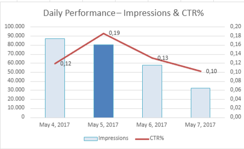
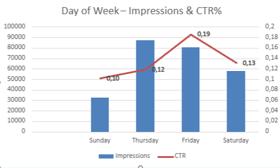
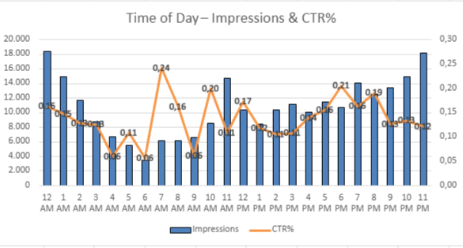
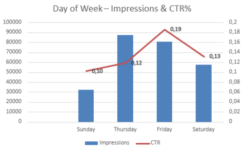
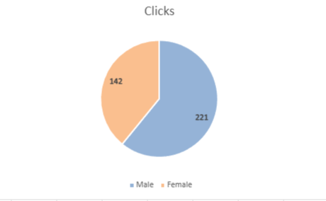
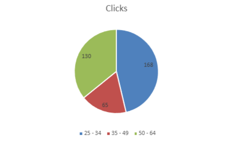
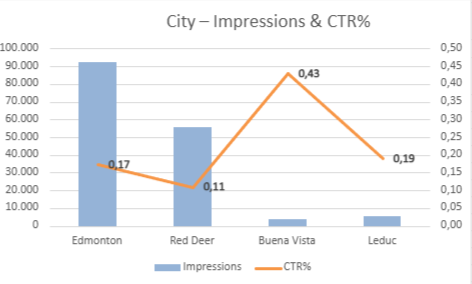
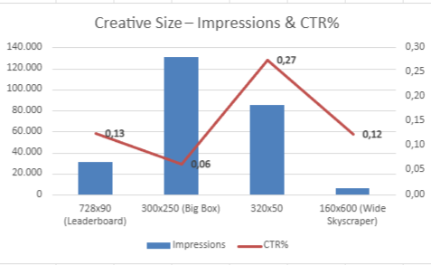

Key Visuals








Strategic Insights
- Friday delivered the best CTR (0.19%) and strong overall engagement
- CTR peaks between 7–10 AM; early-day delivery is recommended
- Female and 35–49 audiences showed the best cost-performance balance
- The 320x50 banner format outperformed all others in CTR and clicks
- High-CTR cities like Buena Vista offer strong results in niche geos
- Campaign strategy must adapt based on platforms, bidding models, and optimization cycles
Resources
📎 Download Full Presentation (PDF)
📊 View Tableau Dashboard